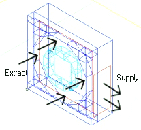
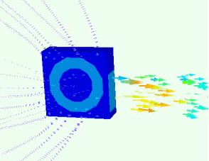

To model blowers,
in addition to specifying the recirculating flow, you add a surrounding
casing and define the shear profile.
Procedure
- As an example, create a cuboid,
the full length and height but only 70% the width of the blower.
- Place a recirculation device
on the cuboid, locating the Extract and Supply on the surface of
the cuboid.
- Create the hub inlet using
a Cylinder SmartPart and place over the extract to block it.
- Create the outer diameter
of the inlet using prisms.
- Set up the fan curve (that
is, flow rate versus pressure characteristic). To define the flow,
select Non-Linear Fan Curve and click Fan Curve,
then set the characteristics of the flow in the expected operating range.
Refer to “Defining a Fan Characteristic Curve”.
- For the Supply, choose a Flow
Dependent shear model.
Results
Consider the simple representation
of a micro-blower as shown in modeled in Figure 1.
Figure 1. Modeled Blower
Figure 2, captured in Analyze mode, shows the
modeled flow.
Figure 2. Flow Through Blower